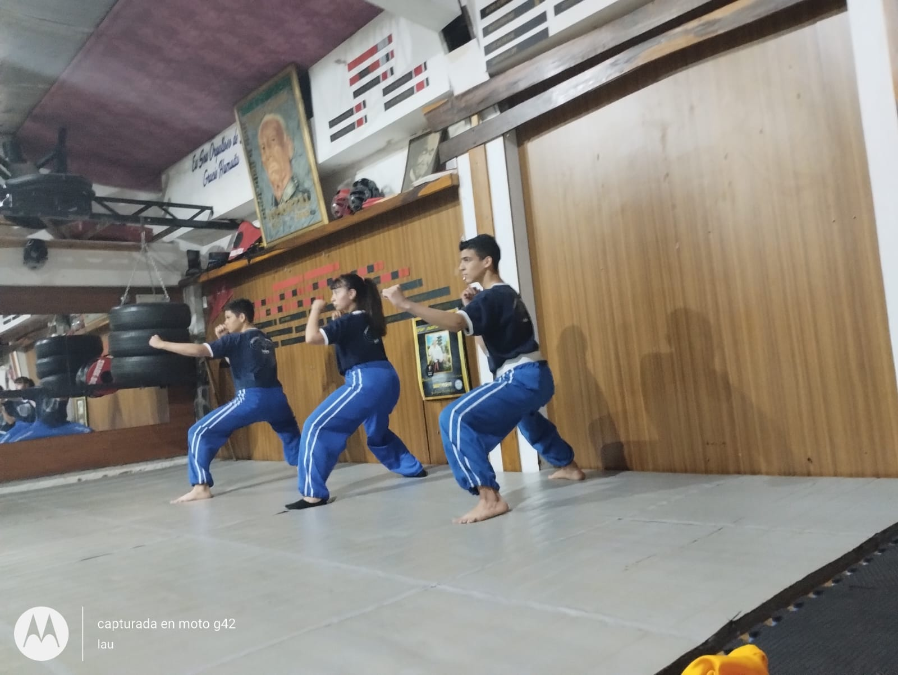
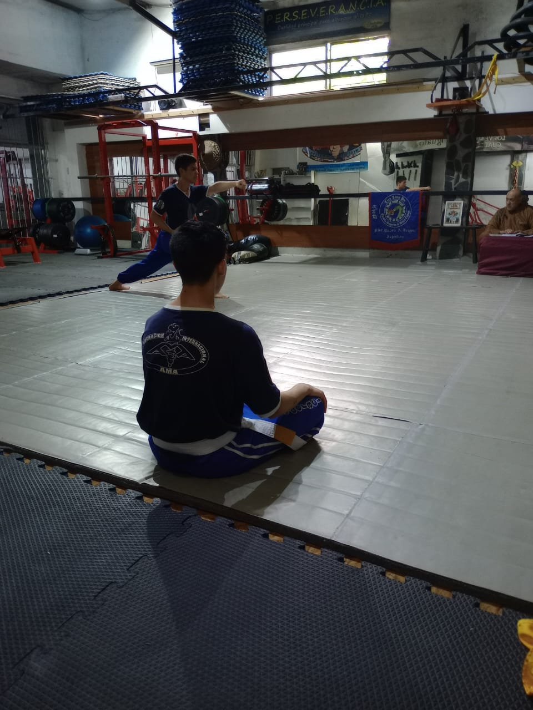

Desde chico sentí atracción por las artes marciales gracias a las series y películas que había por entonces. Sin embargo, solo me atraía la parte de pelear ya que no comprendía lo que es el arte marcial en realidad. Al empezar la primaria comencé a recibir golpes por algunos compañeros solo por ser gordo, eso me llevó a querer aprender a defenderme y así comencé a estudiar Kung Fu en la Tien Long Hu, con el maestro Ruben Alberto Braun y más tarde con el profesor Sergio Alejandro Martínez en el año 2008. Con el tiempo gané confianza y autoestima a la vez que mejoraba mi salud gracias al Kung Fu. En 2011 obtuve la graduación de cinturón negro y desde entonces doy clases. Gracias a las artes marciales he conocido países como Chile, Italia y Polonia donde tuve la oportunidad de competir. Incursioné en Judo con el maestro Mario Massone en el que alcance el cinturón amarillo, Brazilian Jiu JIstu alcanzando el cinturón marrón, Sport Jiu Jitsu llegando al cinturón negro, Sanda, MMA, Muay Tai, Tae kwon do, Karate, defensa personal y Tai Chi. En el 2021 obtuve la graduación de maestro en Kung-Fu (Wu-Shu) y el 01/01/2022 fundé la Shēn-Xīn-Líng avalado por mi maestro, el Gran Maestro Ruben Braun, director de la Tien-Long-Hu.

Perseverancia

Disciplina

Respeto

Compañerismo